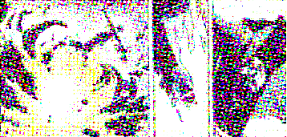

Next: Como realizar inclusão utilizando Up: mutsaz inverno pozimi Previous: O Fenômeno Shanzhai
| http://www.pelivre.org/blog/?p=353http://www.pelivre.org/blog/?p=353 |
Tags: alan moore, azeredo, gasto público, internet, lei da transparência, Liberdade, vigilância

Em uma parte de V de Vingança, história em quadrinhos escrita pelo inglês Alan Moore, V, personagem principal, dialoga com a estátua da justiça. Nesse diálogo passional, o personagem diz que durante muito tempo amou a justiça, mas que ela o havia traído com outros homens (no caso o governo) e que só havia justiça para o poder. V revela que encontrou outra amante e que ela tinha lhe mostrado que só existe justiça com liberdade. Então V se despede de sua ex-amante de uma forma, literalmente, pirotécnica.
Li recentemente duas notícias que me deixaram curioso e preocupado, ao mesmo tempo. Curioso no sentido do apoio a dois projetos para acompanhamento e auditoria de gastos públicos, preocupado pois acho, sendo visionário assim como Alan Moore, de que talvez algumas pessoas do poder público não queiram deixar isto tão barato e possam querer revidar, invertendo o jogo, controlando a rede e cerceando a liberdade.
A primeira é uma matéria/entrevista que saiu na revista ARede, sobre
a lei da transparência . Para quem não conhece, a Lei da Transparência ou ``Lei
Capiberibe'', sancionada em 2009, obriga a divulgação
de gastos previstos e realizados nos orçamentos da União, Estado,
Distrito Federal e Municípios. A ideia da lei é que os gastos destes
órgãos fossem divulgados, em tempo real, nos seus portais, fazendo
com que os interessados vigiassem os gastos públicos com transparência.
. Para quem não conhece, a Lei da Transparência ou ``Lei
Capiberibe'', sancionada em 2009, obriga a divulgação
de gastos previstos e realizados nos orçamentos da União, Estado,
Distrito Federal e Municípios. A ideia da lei é que os gastos destes
órgãos fossem divulgados, em tempo real, nos seus portais, fazendo
com que os interessados vigiassem os gastos públicos com transparência.
Já a segunda vai para os que não querem cumprir a lei ou querem mascarar
dados das contas, saiu uma matéria no site Info Plantão sobre a aplicação
Transparência Hacker . Esta aplicação lê os dados oficiais dos sites de órgãos públicos,
agrega e cruza com demais dados. Este projeto pretende montar dados
que estão pela metade, ocultos e revelá-los aos cidadãos interessados.
. Esta aplicação lê os dados oficiais dos sites de órgãos públicos,
agrega e cruza com demais dados. Este projeto pretende montar dados
que estão pela metade, ocultos e revelá-los aos cidadãos interessados.
Como podemos ver, o uso da tecnologia para o controle dos gastos públicos
parece estar progredindo, e é isso que me deixa bastante curioso.
Minha preocupação surge do medo de haver uma espécie de inversão de
controle e vigilância. Algumas pessoas no poder querem limitar o uso
da internet, vide o caso do ridículo projeto de Lei do senador Azeredo . E acho que a tendência é, ainda mais com estas novas ferramentas
cobrando transparência, piorar. Creio que não deixarão barato.
. E acho que a tendência é, ainda mais com estas novas ferramentas
cobrando transparência, piorar. Creio que não deixarão barato.
O que eles podem fazer? Dá pra se ter uma ideia, começando pelo projeto de lei, relatado pelo Azeredo, que logo de início, com a desculpa de focar crime cibernético, criou um clima de total cerceamento na rede, tanto que ficou conhecido como o ``AI-5 Digital''.
E como nós podemos nos proteger? Eu acredito que devemos nos empenhar
na construção do nosso marco civil para a internet. Vejo como um asseguramento de que nossos direitos
de liberdade da rede não sejam afetados por atores que se sintam prejudicados
pela justiça/transparência/verdade. As leis da internet devem ser
construídas de uma forma que siga a lógica da própria grande rede,
que é a lógica horizontal, colaborativa e não vertical, de cima pra
baixo, por meio da imposição. Assim como Moore e seu personagem V,
acredito que a justiça tem que caminhar com a liberdade.
para a internet. Vejo como um asseguramento de que nossos direitos
de liberdade da rede não sejam afetados por atores que se sintam prejudicados
pela justiça/transparência/verdade. As leis da internet devem ser
construídas de uma forma que siga a lógica da própria grande rede,
que é a lógica horizontal, colaborativa e não vertical, de cima pra
baixo, por meio da imposição. Assim como Moore e seu personagem V,
acredito que a justiça tem que caminhar com a liberdade.
Felipe Fonseca 2010-09-24